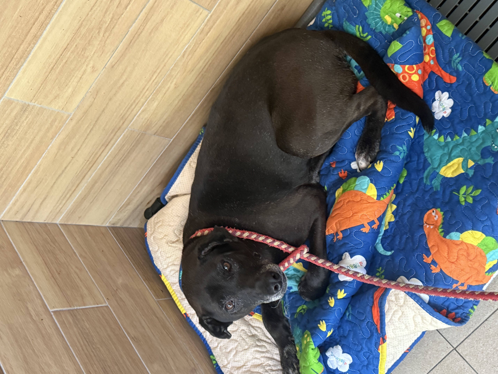

Lucas dog: Shunu

Age: about 8 months old
Personality: friendly, active, gentle, calm
Likes: running, playing, exploring, resting on her bed
Good points: easy to approach, full of energy, but also able to rest quietly
Possible fear: being alone for too long
Dream: running in a big field and living with a family that spends time with her
2. Your friendly introduction paragraph Shunu is a friendly and gentle dog. When I first went near her, she stayed calm and let me touch and pet her. That made me feel safe and comfortable. She is about eight months old, so she is still young and has a lot of energy. She likes to run around and explore, but after that she can also lie on her bed and rest quietly. I think Shunu is a sweet dog that could make a family very happy.
3. Your logical argument paragraph I think Shunu would be a good dog to adopt for a few clear reasons. First, she is friendly and easy to approach, which is important because many people want a dog that feels safe and calm. Second, she is still young and active, so she would be a good match for people who like walking, playing, or spending time outside. Third, she is not active all the time because she can also calm down and rest. This shows that she is playful, but not too difficult to handle. Because of these reasons, I think Shunu would be a good dog for a family.
4. Your emotional argument paragraph I think Shunu deserves a home where she can feel safe, loved, and knows people care for her. She seems like a dog that likes being around people, so to be alone for too long might make her feel lonely. She is still young, and she has a lot of life ahead of her. It would be sad if she did not have a family to play with her, spend time with her, and take care of her every day. I think a kind home could give her a better life.